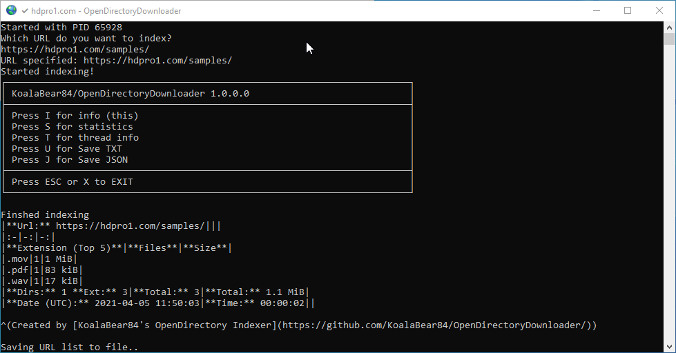

📁
130+ formats
Apache, nginx, AList, Directory Lister, HFS, Bhadoo, GoIndex, Mediafire, GoFile, GitHub, pCloud, Dufs and many more.
Free · Open source · Cross platform
Point it at a URL and get a complete list of every file, with sizes. Works with 130+ listing formats, FTP(S), Google Drive, GitHub and more. Feed the result to wget or aria2 to download.
Windows · Linux · macOS · ARM / Raspberry Pi · Docker

Built for huge listings and awkward servers.
Apache, nginx, AList, Directory Lister, HFS, Bhadoo, GoIndex, Mediafire, GoFile, GitHub, pCloud, Dufs and many more.
Scans FTP(S) servers and Google Drive folders, including a headless mode for servers without a browser.
Every scan is written to SQLite as it runs. Pause with P and --resume later where you left off.
Cloudflare support through a browser or FlareSolverr, browser fingerprint emulation with --http-cloak, proxies and Tor.
Saves a URLs file for wget, an aria2 file with directory structure, and optional JSON.
Reddit ready statistics, a speed test, and upload of the URLs file to Catbox, qu.ax, 0x0.st, GoFile or UFile.io.
Experimental
Run --serve and open any scan database as a tree with size bars, search, an image gallery and statistics. Download single files or a whole folder as a ZIP, straight from the original site.
.sqlite file onto the program or the page$ OpenDirectoryDownloader --serve --serve-db D:\scans Viewer running at http://127.0.0.1:8080 3 databases, 2.4 million files
Get the single executable for your system. No runtime needed.
Give it a URL and let it index.
Use the URLs file with wget or aria2.
# Windows OpenDirectoryDownloader.exe --url "https://myopendirectory.com" # Linux / macOS ./OpenDirectoryDownloader --url "https://myopendirectory.com"
# Download with wget wget -x -i theurlsfile.txt # Download with aria2 (keeps folders) aria2c -i theurlsfile-aria2.txt
Short options combine: -qcj is -q -c -j. Press I during a scan for the key commands.
64-bit builds for Windows, Linux and macOS, plus ARM and ARM64 for the Pi.
# or with Docker
docker run --rm -v c:/Scans:/app/Scans -it koalabear84/opendirectorydownloader --quit --speedtest